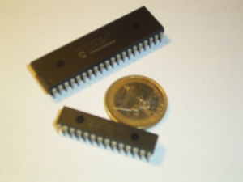
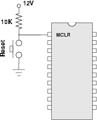
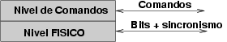
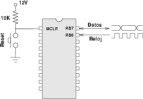
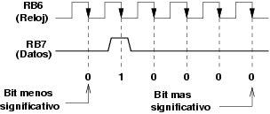
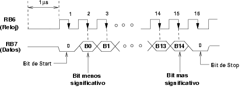
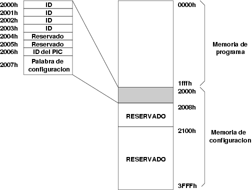
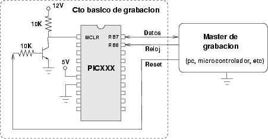
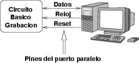
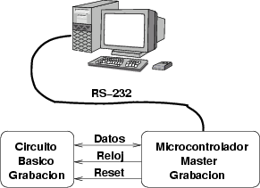

|
Cuaderno técnico 4: Grabación de microcontroladores PIC |

Los microcontroladores PIC se graban mediante un método llamado ICSP (in circuit serial programing), por el cual se puede grabar la memoria de programa, la memoria de datos y la palabra de configuración.
En este cuaderno técnico se explican los principios de grabación, para las familias 16F8X y 16F87X. Esta información puede resultar útil si se quiere construir un programador de pics, o bien si se quiere programar un microcontrolador o un PC para realizar esta grabación (Máster de grabación). Se puede encontrar mucha más información en los manuales de Microchip, disponibles aquí.
Para realizar la grabación, el PIC debe estar en modo monitor. Existen varias maneras de entrar en este modo, que dependen del PIC usado. Aquí utilizaremos el método más general, que consisten en introducir una tensión de 12 voltios por la pata MCLR. (El otro método es el denominado de bajo voltaje. Hay que introducir 5 voltios por la pata RB3. Consultar el manual de programación para más información)
En esta figura se muestra un ejemplo de un circuito para hacer que el pic entre en modo monitor. Hay que introducir 12v por la pata MCLR. Cada vez que se pulse (y suelte) el botón de reset, el pic entrará en modo monitor, por lo que se tendrá acceso a los servicios de grabación.

Un vez en modo monitor, se tiene acceso a una serie de servicios, a través del protocolo ICSP. Este protocolo se describe a dos niveles: nivel físico y nivel de comandos. En el nivel físico se especifica cómo se transmiten los bits (temporizaciones, sincronismo, etc) y en el de comandos qué tramas hay que enviar para tener acceso a los diferentes servicios.

Para realizar la comunicación se utiliza un protocolo serie síncrono. Son necesarios dos hilos, del puerto B, uno para llevar los datos (conectado a RB7) y otro para el reloj (conectado a RB6).

Los detalles son los siguientes:
Primero se transmiten los bits menos significativos
Los datos se capturan en el flanco de bajada del reloj
El periodo mínimo del reloj es de 200ns (frec máxima de 5MHz)
El tiempo de setup (tiempo que deben estar los datos antes de que llegue el flanco de bajada) y el tiempo de hold (el que deben estar después de producirse el flanco de bajada) son de 100ns
Ejemplo de envío del comando 000010 (6 bits):

Al PIC se envían comandos, de 6 bits, como en el ejemplo anterior, y datos de 14 bits. Los datos son bidireccionales, se pueden enviar al PIC o leerlos desde él. En la transmisión de los datos hay que colocar un bit de start y un bit de stop, que tienen el valor 0. En total se necesitan 16 flancos de bajada para el envío de los datos, y 6 flancos de bajada para los comandos.
Envío de comandos: 6 flancos de bajada (6 bits)
Envío de datos: 16 flancos de bajada. (14 bits + 1 bit start + 1 bit stop).
Los datos son bidireccionales: se pueden enviar al pic o recibirlos de él
El tiempo mínimo entre el envío de un comando y la lectura o escritura de un dato, debe ser de 1 micro-segundo
A continuación se muestra un ejemplo de envío de un dato. El cronograma sirve tanto para envío como lectura. En el primer caso los datos los deposita el dispositivo grabador y en el segundo salen del pic.

El acceso a los servicios del modo monitor se realiza enviando primero comandos y a continuación datos, si fueran precisos.
En la siguiente tabla se encuentra información sobre los comandos más comunes, disponibles en casi todos los PICs. Existen más servicios, específicos para determinadas familias de PICs. (Consultar las hojas de datos para más información):
|
Comando |
Valor |
Datos |
Dirección |
Descripción |
|
0 0 0 0 0 (00H) |
Si |
Entrada |
Saltar a la memoria de configuración |
|
|
0 0 0 1 0 (02H) |
Si |
Entrada |
Enviar un dato para la memoria de programa |
|
|
0 0 1 0 0 (04H) |
Si |
Salida |
Leer un dato de la memoria de programa |
|
|
0 0 1 1 0 (06H) |
No |
---- |
Apuntar a la siguiente dirección |
|
|
0 1 0 0 0 (08H) |
No |
----- |
Comenzar un ciclo de borrado/grabación |
|
|
0 1 0 0 1 (09H) |
No |
--- |
Borrado completo de la memoria de programa |
|
|
0 1 0 1 1 (0BH) |
No |
---- |
Borrado completo de la memoria de datos |
|
|
0 0 0 1 1 (03H) |
Si |
Entrada |
Enviar un dato para la memoria de datos |
|
|
0 0 1 0 1 (05H) |
Si |
Salida |
Leer un dato de la memoria de Datos |
En la primera columna se encuentra el nombre del comando en inglés, utilizando la nomenclatura de Microchip. En la siguiente está el valor del comando en binario y en hexadecimal. El bit de la izquierda es el más significativo. La tercera columna indica si hay transferencia de datos y la cuarta el sentido de esta transferencia: si es desde el PIC hacia el exterior (salida) o desde el exterior hacia el pic (entrada). La última columna describe qué hace el comando.
Cuando se hace un reset y se entra en modo monitor, el contador de programa (PC) apunta a la dirección 0000h. (Memoria de programa). Cualquier comando enviado actuará sobre la dirección que indique el PC.
Si se envía el comando increment-address (0x06), se incrementa el contador de programa, aputándose a la siguiente dirección (pc=pc+1)
Si se envía el comando Load Configuration (0x00) (Hay que enviar un dato, que se ignora), el contador apuntará a la dirección 2000h (PC=2000H), donde se encuentra el bloque de configuración, con la palabra de configuración y la identificación del PIC. Para volver al bloque de memoria de programa es necesario hacer un reset.
Se puede encontrar más información aquí
Cuando se entra en modo monitor, la memoria se divide en dos partes: la memoria de programa (0000h-1FFFh) y la memoria de configuración (2000h-3FFFh).
Dentro de la memoria de configuración, existe una región, comprendida entre las direcciones 2000h y 2007h, que tiene información importante. Primero se encuentran 4 posiciones disponibles para que el usuario guarde información de identificación (Direcciones 2000h-2003h). En la dirección 2006h hay una identificación del PIC, grabada por el fabricante y que permite conocer de qué modelo de PIC se trata. Finalmente en la dirección 2007h se encuentra la palabra de configuración.

Al hacer un reset el contador de programa apunta a la dirección 0000h. Cuando se envía el comando "Load Configuration" (00h) se pasa a la memoria de configuración (2000h). Para volver a la memoria de programa hay que volver a hacer un reset.
El circuito más simple para realizar la grabación de un pic se muestra a continuación:

En vez de utilizarse un pulsador para hacer reset, se utiliza un transistor PNP. Cuando la señal de reset se pone a '1', el transistor se satura y entran 0v (aprox) por la pata MCLR. Cuando reset está a '0', el transistor está al corte y por MCLR entran 12v (aprox). En vez de un pulsador manual, ahora tenemos un pulsador electrónico, que se abre y cierra en función del valor de la señal reset.
El pic además debe estar alimentado a 5v. Son necesarias dos alimentaciones, una de 5v y otra de 12v.
La grabación del pic se realiza desde un sistema que llamaremos Máster de grabación, que es el que transmite los datos y comandos, la señal de reloj y la de reset. Este Máster puede ser cualquier sistema digital, por ejemplo:
Un ordenador PC, que utilice 3 pines del puerto paralelo para las señales de datos, reloj y reset. En este caso es el software en el PC el que debe implementar el protocolo ICSP

Un ordenador PC, que utilice los pines de control del puerto serie (ej. DTR, CTS, RTS, DSR...). Esto es lo que emplean algunos grabadores, como el TE20. Nótese que se utilizan pines del puerto serie pero NO se trata de las clásicas comunicaciones RS-232 (sería asíncronas). El protocolo ICSP se implementa por software, usando los pines de control como si fuesen pines de entrada/salida normales (Las señales TX y RX NO SE USAN para el protocolo. El TE20 las utiliza para la obtención de los 12v necesarios para la grabación)
Un microcontrolador, por ejemplo un 6811 o un PIC. Esta forma de grabación es la más fiable y la que permite una mayor independencia del PC y del sistema operativo usado (grabador universal). Es necesario programar el microcontrolador Máster para que implemente el protocolo ICSP y además conectarlo a un PC o similar por el puerto serie (o USB), por donde se transmitirá el fichero a grabar. Este es el sistema empleado por el ICD de Microchip.

La alternativa 3 es la que se recomienda, ya que es la más portable e independiente tanto de la máquina como del Sistema Operativo. Con ella hemos realizado pruebas de grabación de PICs, utilizando como máster de grabación la tarjeta CT6811 y una tarjeta prototipo con el PIC16F876A.
Este documento se distribuyen bajo licencia FDL por lo que se permite su copia, modificación y distribución, siempre y cuando se mantenga esta nota.
|
Documentación de referencia |
|
16f87x-flash-programming.pdf (247KB) |
Hoja de datos de Microchip, con las especificaciones para la grabación de la familia PIC16F87x |
|
16f8x-serial-prog.pdf (158KB) |
Hoja de datos de Micrichip, con las especificaciones para la grabación de la familia PIC16F8X |
|
Cuaderno técnico 4 |
|
figuras.tgz (10KB) |
Todas las figuras de este cuaderno, para el programa Xfig (3.2.4) |
|
ct4.pdf (106KB) |
Cuaderno técnico 4, en PDF |
|
comandos.pdf (12KB) |
Resumen de agunos comandos del protocolo ICSP |
Tarjeta SKYPIC, tarjeta entrenadora para Microcontroladores PIC
Tarjeta PICUPSAM, un entrenadora para el PIC16F87X
Tarjeta GEYDi, entrenadora para PICs de 40 pines
Cuaderno técnico 1, comunicaciones serie (HW)
26/Sep/2004:
Añadido enlace a la Tarjeta SKYPIC.
Añadido enlace al índice de cuadernos técnicos
28/Dic/2003: Publicado en la web